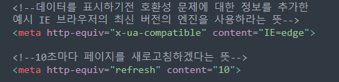

meta태그는 HTML문서에 대한 메타데이터를 정의한다.
메타데이터란 데이터에 대한 데이터,즉 '정보'를 의미한다.
meta태그는 항상 gead태그의 안에 들어가며,일반적으로 문자 세트,페이지,설명,키워드,문서의 작성자 및 뷰포트 설정을 지정하는데 사용된다.
(이러한 meta태그에 의해 작성된 정보는 사실 페이지 결과물에는 별다른 영향을 끼치지않음 )
그럼에도 불구하고 메타태그를 사용하는 이유는 웹페이지에 대한 정보를 제공하기때문에 검색 엔진이 페이지를 검색할때 이를 참고할수있음. (검색 최적화에 사용됨)
또한 메타데이터에 작성된 정보의 일부는 검색 결과에도 반영될수 있음.
※charset : 문자세트
※http-equiv : 콘텐츠 속성 정보에 대한 http헤더
※name : 문서 정보
※content : 메타데이터 내용
=>등등이 있다. (많이 쓰이는 코드)
문자 인코딩에 대한 요약 정보를 기입하는 속성이다. 문자 인코딩이란 한글을 표시하기
위해 문자 세트를 지정하는 작업으로, 영문과 한글을 모두 사용하기 위해 utf-8방식을 사용하는것이 좋음.
인코딩을 명확하게 기입해두지 않으면 웹브라우저 설정 상황에 따라 자동
으로 인코딩을 추정해서 처리한다.(문자가 꺠질 가능성이 생긴다.)
콘텐츠 속성의 정보/값에 대한 http헤더를 제공한다
(http란 인터넷에서 데이터를 주고 받을 수 있는 프로토콜)
Ex

name속성을 이름으로, content속성을 값으로 하여 문서 정보를 이름 +값 쌍의 형태로 제공할 때 사용할 수 있다.
Ex
개발자 도구에서 확인가능 이와 같이 페이지는 달라지지 않지만, 이렇게 메타태그를 여러가지 추가하면
검색엔진이 페이지를 검색할때 참고 자료로써 메타태그가 쓰일수도있고 개발 단계에서도 페이지에
대한 정보를 명시함으로써 개발에 좋은 참고로도 사용가능